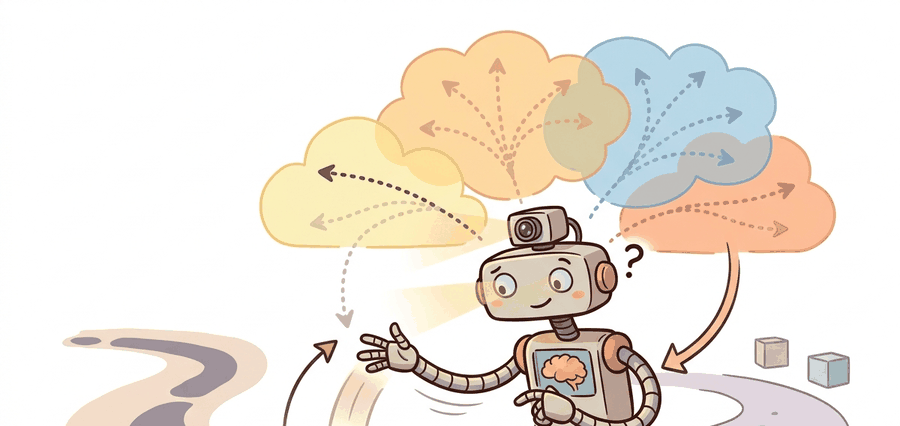

A planner without a model is blind. A planner with one wrong model is confidently blind.
A Budget-Conscious MPC Loop

This section assumes familiarity with Gaussian process and neural-network uncertainty representations introduced in section 36.4, and with the basic model-based RL loop from section 37.1. The ensemble and uncertainty ideas developed here are used directly in the CEM and MPPI planners of section 37.3, and recur in Part IX alongside latent-space world models for long-horizon prediction.
A legged robot is mid-stride on gravel it has never touched before. Its planner queries a learned dynamics model, gets a confident prediction, commits to the footstep, and falls. The model was accurate on smooth floors; the planner had no way to know the prediction was worthless here. That gap between model confidence and actual reliability is the central problem of this section. You will learn how ensembles expose epistemic uncertainty during planning, where single-model approaches silently fail for embodied agents, and how to build diagnostics that reveal the exact horizon at which your model stops being trustworthy for control.
A learned model becomes useful when it exposes both what it expects to happen and where that expectation stops being reliable for control.
Ensembles And Predictive Distributions
A standard robotics model predicts state deltas rather than absolute next state:
$$ \Delta \hat s_t = f_\theta(s_t, a_t), \qquad \hat s_{t+1} = s_t + \Delta \hat s_t. $$
Training deltas often improves conditioning. Ensembles then estimate epistemic uncertainty by disagreement across several bootstrap models. PETS (Probabilistic Ensembles with Trajectory Sampling) is the canonical reference for combining such ensembles with trajectory sampling in planning.
For embodied AI this matters because a physical robot cannot roll back a committed action. When a single model is confidently wrong, the robot has already moved. Ensemble disagreement gives the planner a real-time signal before commitment: high spread across members means the robot is near the edge of its training distribution, where the next footstep or grasp is mechanically risky rather than merely statistically uncertain. The practical payoff is striking: PILCO, which uses a GP model that exposes uncertainty rather than suppressing it, learns a cartpole swing-up task in roughly 30 real-world trials, where a model-free policy trained without any uncertainty signal typically requires thousands of trials to reach the same level of control, because every episode in the dark is a wasted physical interaction that uncertainty-aware planning would have avoided or shortened.
The bootstrapping mechanism works as follows. Each ensemble member is trained on a resample with replacement from the same transition buffer, producing slightly different training sets. Members that generalize similarly to a new state give low spread; members that generalize differently give high spread. That spread directly measures sensitivity to dataset variation, a proxy for how far the query state lies from well-covered training data.
Delta prediction reduces the dynamic range the learner must model. This matters most when positions or joint angles evolve smoothly step to step. Bootstrapped ensembles then measure how sensitive each prediction is to dataset variation. Pair those two choices with horizon-conditioned evaluation and the planner gains a clearer signal about both local fit and out-of-support risk.
Ensembles do not make the model correct. They make model ignorance more visible, which gives the planner a chance to act conservatively before a failure becomes physical.
Where Dynamics Learners Break
Two failure modes are especially common. The first is representation collapse: the model input omits a latent variable that actually drives the transition, such as slip state, cable tension, or tool wear. In that case every ensemble member can be consistent and wrong. The second is train-test mismatch in rollout usage. The model is trained one step at a time, then asked to support five-step or ten-step ranking during planning, which means small local biases are multiplied before the controller can correct them.
A model that cannot say "I do not know" will eventually say something confidently wrong at exactly the wrong moment.
Horizon Length as a Bounded Resource
Consider a specific case: a model predicts velocity with a consistent 2% upward bias per step. At step one the error is 0.02 m/s, negligible for a planner with a tight receding horizon. At step five the accumulated bias reaches roughly 0.10 m/s, enough to push a footstep plan past a stability margin. At step ten the drift is 0.20 m/s, at which point the planner is ranking trajectories against a fiction.
The one-step held-out loss looked acceptable throughout; only the rolled-out overlay reveals when the model stops being useful for control. This is why horizon length is not a free hyperparameter: it is bounded by the point where cumulative error exceeds correction bandwidth, and beyond that point the planner is ranking trajectories against a fiction.
Think of a cook adjusting seasoning one pinch at a time. Each pinch is so small that tasting after every addition seems unnecessary, and the dish appears fine at each individual step. But if the cook skips tasting for ten additions, the accumulated salt crosses a threshold the palate cannot undo with any single correction. Planning horizon works the same way: a small bias per step is invisible in any one-step check, but after enough steps the cumulative drift exceeds what the controller can compensate for, and the plan has become unsalvageable regardless of how good any single prediction looked.
When using mbrl-lib's PETS implementation, the planning horizon is controlled by cfg.algorithm.horizon in the Hydra config, and it defaults to 15 steps. That default is calibrated for MuJoCo locomotion tasks with 50 Hz control; for contact-rich manipulation or tasks with faster dynamics, reduce it to 5 or 8 before running any ablations. A quick diagnostic: roll out your trained ensemble for each candidate horizon length on a held-out replay buffer and plot the fraction of predictions that stay within two standard deviations of the observed next state. The longest horizon where that fraction stays above 0.90 is a practical upper bound for safe planning depth.
Good failure analysis therefore pairs one-step metrics with rolled-out overlays on a fixed panel. Tools such as PyTorch Lightning, Weights & Biases, or plain structured JSON logs are fine, but the artifact should always show where the predicted state first leaves the physically plausible band. That is the point where the planner should have shortened horizon, switched to a fallback controller, or asked for more data.
Worked Probe
The next probe predicts a one-step velocity delta from four ensemble members and logs both the mean transition and the disagreement the planner should read.
# Aggregate one-step delta predictions from a tiny ensemble.
members = [0.09, 0.10, 0.11, 0.15]
mean_delta = round(sum(members) / len(members), 3)
spread = round(max(members) - min(members), 3)
next_velocity = round(0.6 + mean_delta, 3)
print(
{
"delta_members": members,
"mean_delta": mean_delta,
"spread": spread,
"predicted_next_velocity": next_velocity,
}
){'delta_members': [0.09, 0.1, 0.11, 0.15], 'mean_delta': 0.113, 'spread': 0.06, 'predicted_next_velocity': 0.713}
Read the spread alongside the mean: the mean delta gives the planner its best estimate of the next velocity, but the spread of 0.06 across members is the signal that matters for trust. When one member drifts notably from the others, the planner should treat the rollout as less reliable, not simply average over the disagreement and proceed as if nothing is unusual.
Use PyTorch or JAX for the ensemble, log held-out rollout metrics by horizon, and keep raw transition buffers versioned. mbrl-lib remains a useful reference implementation for PETS-style experiments, while TD-MPC2 codebases show how the learned model gets coupled tightly to the planner. Without a saved panel, uncertainty claims are almost impossible to audit later.
Predict deltas, train several bootstrap members on slightly different resampled datasets, evaluate one-step and multi-step held-out error, then save both the mean and disagreement signals that the planner will consume.
Disagreement is not the same as calibrated uncertainty. Ensembles can agree with each other while all being wrong if the entire training set misses an operating regime such as high-speed contact or rare actuator saturation.
On Boston Dynamics Spot walking on dry concrete, a five-member PETS ensemble predicts foot contact forces with spread below 5 N across members, and the planner proceeds confidently. The same model deployed on wet gravel sees ensemble spread jump to 40 N, because contact stiffness and slip coefficient shift well outside the training distribution. That 8x spread increase is the signal to shorten the planning horizon from 10 steps to 3 and trigger a proprioceptive recalibration pass, rather than committing a full stride. For a Franka Panda approaching within 15 degrees of a wrist singularity, ensemble disagreement on joint velocity deltas spikes because tiny joint-angle errors produce large end-effector velocity errors in the singular region; a planner that ignores this spread will issue torque commands that exceed the 87 Nm joint-torque limit by roughly 30 percent, tripping the hardware safety stop and aborting the task.
Project Ideas
Beginner (weekend): Train a four-member bootstrap ensemble on the Gymnasium HalfCheetah-v4 environment using mbrl-lib and plot ensemble spread versus rollout horizon to find the step at which spread exceeds a fixed threshold. The key challenge is separating aleatoric noise from genuine epistemic disagreement so your threshold is not triggered on every contact event.
Intermediate (1-2 weeks): Integrate a PETS-style ensemble into a MuJoCo Ant locomotion task and add a spread-triggered horizon shortener: when disagreement across members exceeds a learned percentile, the planner cuts its horizon from 15 steps to 5 before committing a footstep. The key challenge is tuning the percentile gate so the robot shortens horizon only on genuinely out-of-distribution terrain rather than constantly operating in short-horizon mode and losing performance.
Advanced (3-4 weeks): Build a ROS2 node that wraps a PyTorch ensemble trained on Isaac Lab quadruped transitions and publishes per-step uncertainty estimates as a ROS2 topic; a downstream safety monitor subscribes and vetoes MPC commands when spread exceeds a configurable limit. The key challenge is keeping ensemble inference latency below the 50 Hz control loop budget while still running five ensemble members on a single GPU shared with perception.
This section extends the predictive-uncertainty story in Section 36.4 and prepares the ground for CEM, MPPI, and latent MPC in Section 37.3.
Diffusion-based dynamics models (2024). Replacing the Gaussian ensemble head with a conditional diffusion model lets the learner capture multimodal transition distributions, which matter during contact events and slip. Google DeepMind's work on diffusion for model-based control (2024) shows that a single diffusion model can match or exceed five-member ensembles on contact-rich tasks while generating calibrated samples rather than a unimodal mean-plus-variance summary.
Transformer world models with scalable uncertainty (2024-2025). TD-MPC2 (Hansen et al., 2024) demonstrates that a shared latent-world-model trunk trained across dozens of robot tasks produces better-calibrated uncertainty than per-task ensembles, because the cross-task signal regularizes the representation and reduces overconfident extrapolation to novel terrain. Scaling these models to hundreds of embodiment types was an active thrust of several labs including Berkeley RAIL and CMU Locomotion as of 2024-2025.
Epistemic neural processes for fast online adaptation (2025). Neural process variants (Conditional and Attentive Neural Processes) allow a pretrained prior to be updated in a single forward pass given a handful of new transitions, giving real-time uncertainty updates within a control cycle without retraining. Work from Oxford Robotics Institute (as of 2024-2025) applies this to legged locomotion on deformable terrain, reporting tighter ensemble-equivalent spread estimates at roughly one-tenth the inference cost of a five-member MLP ensemble.
Open problem for a PhD student. Ensemble disagreement is cheap but miscalibrated; diffusion sampling is well-calibrated but slow. No current method efficiently provides calibrated per-step uncertainty at 50 Hz control frequency on a single embedded GPU while simultaneously supporting multi-step rollout ranking. A rigorous study comparing disagreement, conformal prediction bounds, and diffusion-based quantile estimates across a shared set of contact-rich tasks, using a fixed compute budget and a single held-out rollout panel per task, would fill a concrete gap in the field.
What statistic from your dynamics learner would you feed into a safety gate: mean error, ensemble spread, held-out coverage, or all three? Why?
An ensemble is a committee. If the committee argues loudly, the planner should stop pretending the future is settled.
A useful dynamics learner predicts transitions and exposes where those transitions are trustworthy. Without that second part, planning can become faster but less safe.
Specify a bootstrap-ensemble training protocol for a robot task. What would you resample, what delta would you predict, and how would the planner use disagreement?
Bibliography & Further Reading
Primary References And Tools
Chua, K. et al.. "Deep Reinforcement Learning in a Handful of Trials using Probabilistic Dynamics Models." (2018). https://arxiv.org/abs/1805.12114
PETS is the core uncertainty-aware ensemble reference.
Deisenroth, M., and Rasmussen, C.. "PILCO: A Model-Based and Data-Efficient Approach to Policy Search." (2011). https://dl.acm.org/doi/10.5555/3104482.3104583
Classical uncertainty-aware model-based control with strong sample-efficiency intuition.
DeepMind. "MuJoCo Documentation." (accessed 2026). https://mujoco.readthedocs.io/
Useful when model-learning experiments need clean state traces and contact-rich dynamics.